Manuel d'utilisation
Comprendre le Windgram
Lorsque vous avez cliqué sur votre emplacement sur la carte (panneau de droite), le windgram correspondant à cet emplacement apparaît à gauche.
Naviguer sur le windgram : temps et altitude
L'échelle verticale du Windgram est par défaut à 4000m, mais peut aller jusqu'à 10000 m.
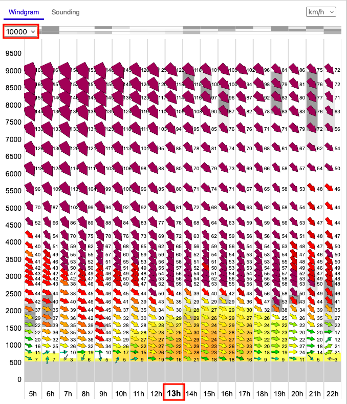
Notez que l'heure en gras en bas est l'heure que vous avez choisie sur la carte. Vous pouvez la modifier en utilisant le défilement ou les boutons en bas de la carte.
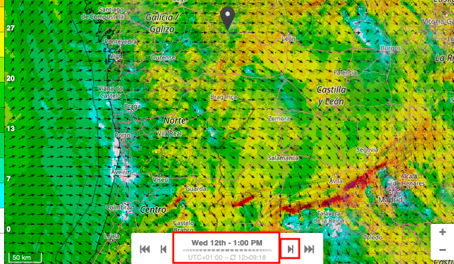
Nuages
Il est important de comprendre les conditions atmosphériques globales, y compris la couverture nuageuse à tous les niveaux.
Les nuages sont schématiquement représentés en haut du windgram sur trois niveaux atmosphériques, bas, moyen et haut. Plus la nuance de gris est foncée, plus la couverture nuageuse prédite est dense à ce niveau.
Lorsque nous parlons des altitudes des nuages, la définition est la suivante :
- nuages bas : <2000m
- nuages de niveau moyen : 2000 à 6000m
- nuages hauts : >6000m
De plus, les nuages apparaissent comme des nuances de gris dans le windgram à leurs altitudes correspondantes. Comme précédemment, une nuance plus foncée indique une couverture nuageuse plus épaisse.
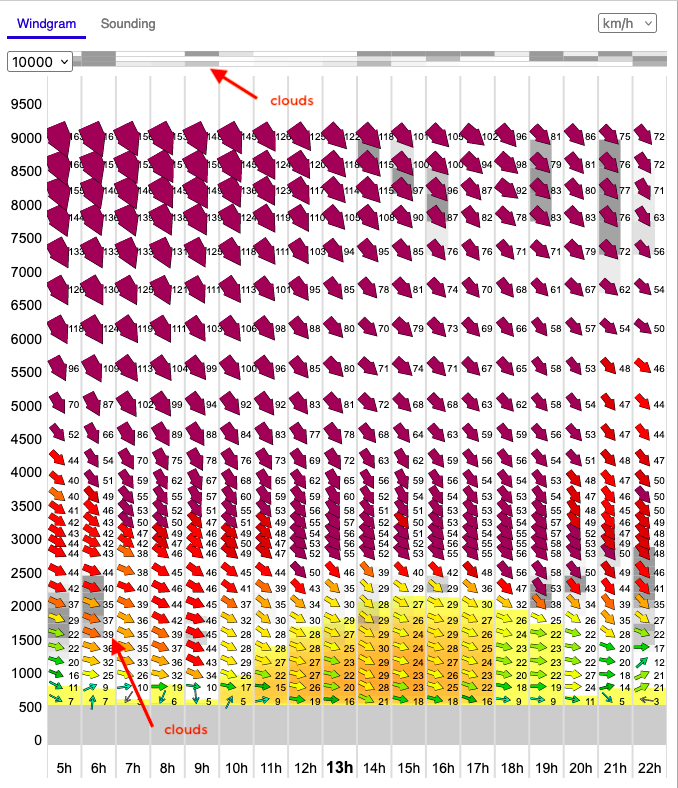
Thermiques et instabilité
Après cette vue d'ensemble globale, il est logique de zoomer au niveau de vol. Ici, nous avons sélectionné une échelle jusqu'à 4000 m, même si les thermiques ne devraient pas dépasser 2250 m aujourd'hui.
Pour assurer un vol sûr, il est crucial d'étudier les conditions au-dessus du niveau d'instabilité.
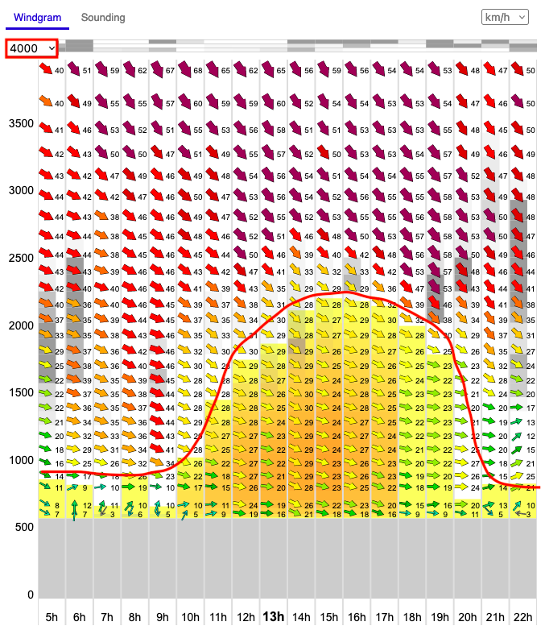
Les nuances de jaune variables sur le windgram représentent l'instabilité atmosphérique : plus le jaune est foncé, plus l'air est instable.
L'activité thermique suit typiquement une courbe en cloche : au fur et à mesure que la journée avance, l'air se réchauffe, atteignant son activité thermique maximale autour de 15h à 16h avant de s'estomper rapidement après le coucher du soleil.
On peut remarquer que la présence des nuages ralentit ou inverse même ce processus (comparez 8h et 9h du matin, par exemple).
Vent
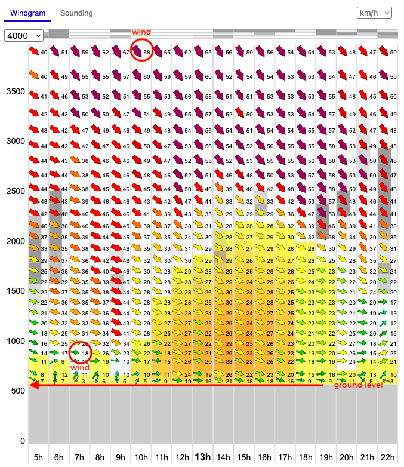
Bien sûr, l'objectif principal du windgram est de visualiser le vent. Les flèches indiquent à la fois la force et la direction du vent — plus la flèche est épaisse, plus le vent est fort. De plus, une échelle de couleurs améliore cette représentation, passant du vert (vent léger) au violet (vent très fort), avec des nuances intermédiaires de jaune et de rouge pour refléter l'intensité croissante.
Niveau du sol
Enfin, remarquez l'absence de données en dessous de 600 m (représentée en gris). C'est le niveau du sol tel que vu par le modèle. Il ne correspond pas nécessairement à l'altitude réelle de ce point de vol.
Cette différence est tout à fait normale. Les modèles météorologiques fonctionnent par approximation et utilisent une grille avec des pixels de quelques kilomètres de large. L'altitude affichée est une moyenne calculée sur cette zone. Ceci n'est pas spécifique à Meteo-Parapente. Il y a le même comportement sur tous les modèles météorologiques : GFS, ECMWF, AROME, ICON....
Précipitations
Parfois, en bas du Windgram, juste au-dessus des heures, une ligne de valeurs apparaît. Ce sont les précipitations (pour voir un exemple, visitez Comprendre les cartes d'humidité).
Comprendre le Diagramme de Sondage
En cliquant sur Sondage à côté du Windgram, on peut passer au diagramme de sondage.
Il fournit des informations critiques pour les pilotes de vol libre. En analysant l'activité thermique, les zones de stabilité et la force du vent, les pilotes peuvent déterminer les altitudes de vol sûres et optimales pour le vol de pente et l'utilisation des thermiques.
Par rapport à un diagramme de sondage classique, la version de Meteo-Parapente est simplifiée et plus complète :
-
L'altitude est affichée en mètres au lieu des hPa (niveaux de pression).
-
L'échelle est linéaire, facilitant l'interprétation.
-
Les flèches de vent (côté droit) et les courbes de sondage sont affichées pour le temps sélectionné (par exemple, 13h dans ce cas).
-
Lorsque l'utilisateur fait défiler l'échelle de temps en bas de la carte, les courbes de sondage et les données de vent se mettent à jour dynamiquement.
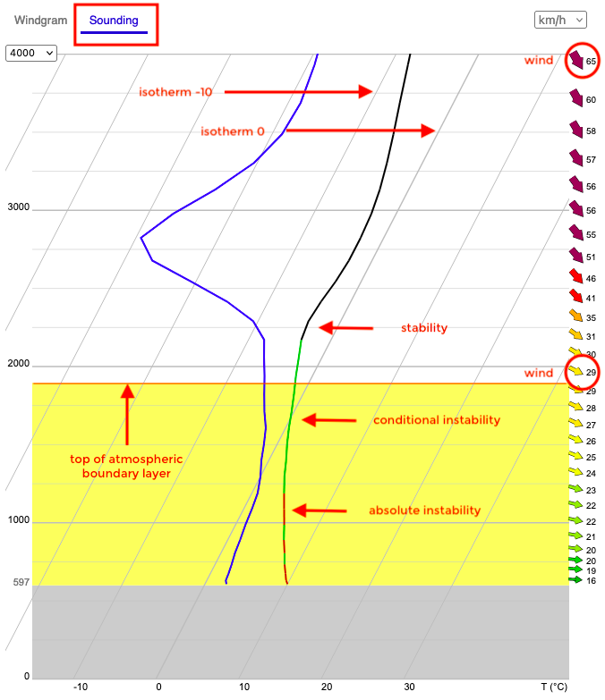
1. Profils de Température
- La ligne noire représente le profil de température réel de l'atmosphère.
- La ligne bleue représente la température du point de rosée, indiquant les niveaux d'humidité et la probabilité de formation de nuages.
- La zone où les deux courbes se touchent indique les précipitations (pour plus de détails, voir Comprendre les Cartes d'Humidité).
2. Zones de Stabilité et d'Instabilité Thermique
- Instabilité Absolue - (zone jaune - courbe de sondage rouge)
Dans cette région, la température diminue rapidement avec l'altitude, favorisant une forte activité thermique.
-
Instabilité Conditionnelle (zone jaune - courbe de sondage verte)
Ici, l'instabilité dépend de la teneur en humidité. Si l'air est sec, il reste stable ; s'il est saturé, il peut monter plus haut, formant des nuages. -
Stabilité (zone blanche non ombrée - courbe de sondage noire)
Cette région résiste au mouvement vertical, limitant le développement thermique. -
Sommet de la Couche Limite Atmosphérique
Marque la limite supérieure de l'activité thermique significative. -
Les lignes verticales inclinées représentent les isothermes (-20°C, -10°C, 0°C, 10°C, 20°C, 30°C, etc.).
3. Profil du Vent
- La vitesse et la direction du vent sont indiquées par des flèches sur le côté droit.
- Des flèches plus épaisses indiquent des vents plus forts.
- L'échelle de couleur représente la force du vent, passant du vert (vent léger) au violet (vent très fort).
- Dans cet exemple, à ~2000m d'altitude, la vitesse du vent est de 29 km/h ; à ~4000m d'altitude, le vent atteint 65 km/h.
4. Observations Clés
Dans cet exemple, le pilote pourrait tirer les conclusions suivantes :
-
Les thermiques ne devraient pas dépasser ~2250m, car la couche de stabilité commence au-delà de cette altitude.
-
Le vent augmente avec l'altitude, ce qui peut avoir un impact significatif sur les conditions de vol. Dans l'ensemble, cette journée pourrait déjà être trop venteuse pour le parapente.
-
La couche d'instabilité conditionnelle suggère une potentielle formation de nuages cumulus.
Comprendre les cartes de vent
Toutes les cartes de vent offrent une représentation visuelle des conditions de vent utilisant des flèches pour la direction du vent et une échelle de couleurs pour l'intensité du vent.
Pour basculer entre différentes cartes de vent, cliquez sur le bouton Menu en haut à droite de l'écran, puis choisissez la représentation appropriée dans la liste déroulante Vent.
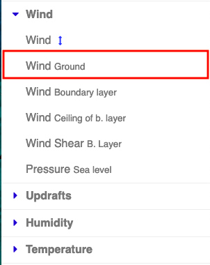
Les cartes les plus couramment utilisées sont Vent au niveau du sol et Vent à différentes altitudes.
Comprendre la carte du vent au niveau du sol
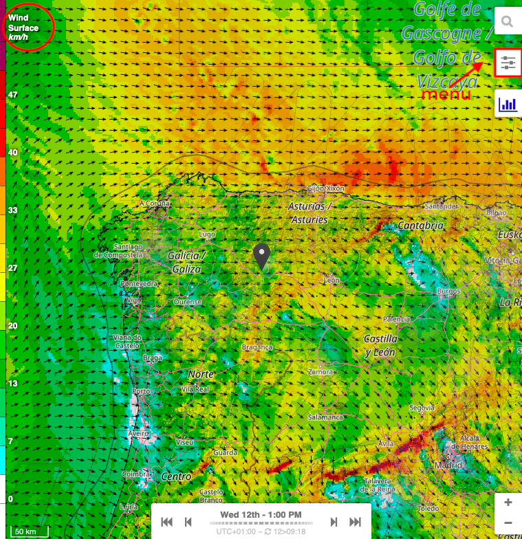
1. Direction du vent (Flèches)
-
Les flèches noires indiquent la direction du vent (dans cet exemple, au niveau de la surface).
-
Les flèches pointent dans la direction du mouvement du vent. Le vent suit les flèches.
2. Vitesse du vent (Couleurs et échelle)
Les couleurs de fond représentent la vitesse du vent, avec une légende à gauche montrant les valeurs en km/h.
Vous pouvez changer l'unité de vitesse dans le windgram ou dans le menu des paramètres.
-
Nuances de vert → Indiquent des vents légers (en dessous de ~20 km/h).
-
Nuances de jaune à orange → Représentent des vents modérés (entre ~20 et 40 km/h).
-
Nuances de rouge → Indiquent des vents plus forts (au-dessus de ~40 km/h).
-
Zones rouge foncé ou violettes (le cas échéant) → Représentent des vents très forts, potentiellement supérieurs à 50 km/h.
L'échelle de couleurs est conçue pour le parapente : le vert est sûr, le rouge est dangereux.
Au fur et à mesure que l'utilisateur fait défiler l'échelle de temps en bas de la carte, les données de vent se mettent à jour dynamiquement.
Comprendre la carte du vent à différentes altitudes
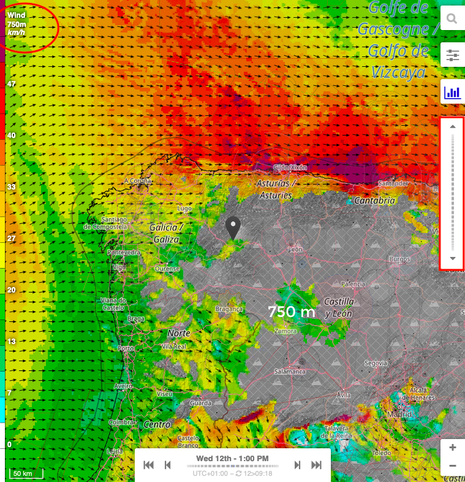
La carte du vent à différentes altitudes fonctionne de manière similaire à la carte du vent au niveau du sol.
Pour naviguer entre les altitudes, utilisez le défilement vertical sur la droite, qui permet de passer par incréments de 250 m.
-
L'altitude actuelle est affichée dans le coin supérieur gauche de la page (ici, 750 m).
-
Une zone grisée illustre le terrain montagneux tel qu'estimé par le modèle, signifiant des régions où les données de vent sont indisponibles, car il n'y a pas de vent dans les rochers. Bien que certains sites web puissent afficher des données de vent dans les montagnes, il s'agit simplement d'une interpolation peu fiable destinée à améliorer l'attrait visuel, et ne doit pas être considérée comme fiable.
-
Naturellement, à mesure que l'altitude augmente, l'empreinte de la montagne diminue, révélant plus de données de vent à des niveaux plus élevés.
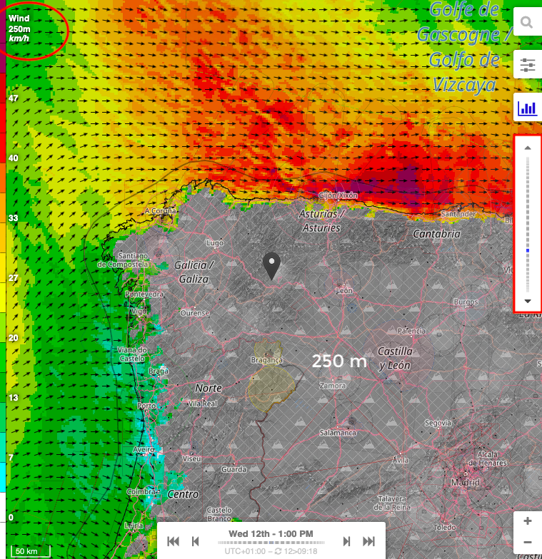
Cette visualisation aide à une meilleure planification des vols et à la compréhension de la dynamique atmosphérique.
Comprendre la carte de pression au niveau de la mer
Cette visualisation représente la pression au niveau de la mer (MSLP), un paramètre météorologique clé utilisé pour analyser les modèles de pression atmosphérique.
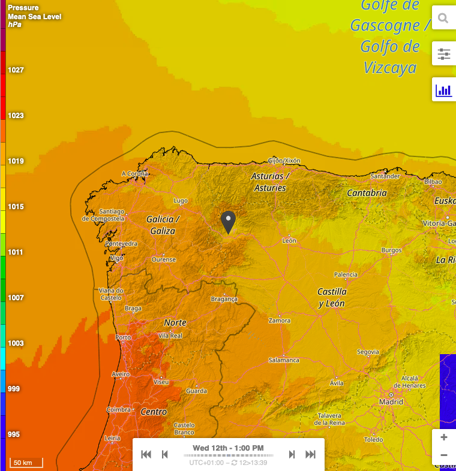
1. Niveaux de pression codés par couleur
- Le dégradé de couleur de fond représente la pression au niveau de la mer en hPa, comme indiqué sur la légende à gauche.
- Pressions plus élevées sont indiquées par des couleurs chaudes (orange, rouge).
- Pressions plus basses sont représentées par des couleurs froides (jaune, vert, bleu).
- Les valeurs sur l'échelle (par exemple, 995 hPa à 1027 hPa) indiquent la pression au niveau de la mer, et non au niveau du sol.
2. Comment interpréter cette carte
- Zones de haute pression (nuances chaudes, orange-rouge)
Généralement associées à un temps stable, des ciels dégagés et une activité éolienne faible. - Zones de basse pression (nuances froides, jaune-brun clair)
Indiquent des régions de potentielle instabilité, pouvant conduire à une augmentation de la couverture nuageuse, du vent et des précipitations. - Les transitions graduelles entre les couleurs reflètent les changements de pression atmosphérique dans une région.
3. Navigation temporelle dynamique
- Le curseur de temps en bas permet aux utilisateurs de faire défiler les prévisions, visualisant l'évolution des systèmes de pression au fil du temps.
- Cela aide à prédire les changements météorologiques, les variations de vent et les développements potentiels de tempêtes.
En analysant les valeurs de pression et leurs variations spatiales, les utilisateurs peuvent anticiper les tendances météorologiques, les modèles de vent et les changements potentiels de stabilité atmosphérique.
Comprendre les cartes thermiques
Toutes les cartes thermiques offrent une représentation visuelle des conditions thermiques (ascendances et couche limite atmosphérique), aidant les pilotes à identifier les meilleures zones de portance, avec des thermiques plus forts se formant typiquement au-dessus des crêtes et vallées exposées au soleil. Elles sont cruciales pour planifier des vols de distance et comprendre le potentiel de vol du jour.
Pour basculer entre différentes cartes thermiques, cliquez sur le bouton Menu en haut à droite de l'écran, puis choisissez la représentation appropriée dans la liste déroulante Ascendances.
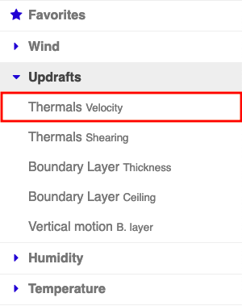
Comprendre la carte de vitesse des thermiques
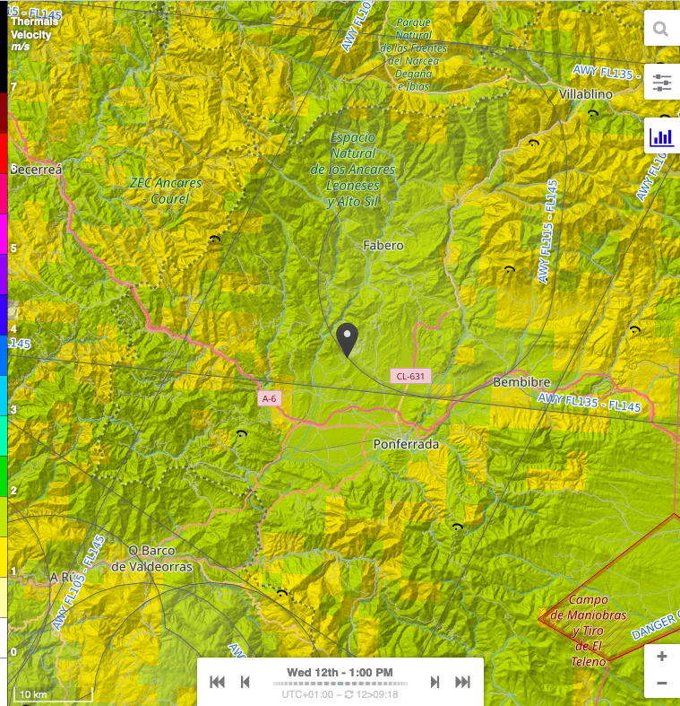
La carte de vitesse des thermiques affiche la vitesse verticale des thermiques (en m/s) à différents niveaux de vol, comme indiqué dans la légende à gauche.
- Nuances jaunes et vert clair représentent des thermiques faibles (0 à ~2 m/s).
- Nuances de vert foncé à bleu indiquent des thermiques modérés (~2 à 5 m/s).
- Nuances de violet et rose correspondent à des thermiques forts (au-dessus de ~5 m/s), pouvant fournir une portance significative.
Utilisez le curseur temporel en bas pour analyser l'évolution de l'activité thermique au cours de la journée.
Il est important de comprendre que cela représente l'intensité thermique moyenne dans la zone. Ce n'est pas la vitesse maximale que vous verriez sur le variomètre dans un thermique spécifique. Cet indicateur est fiable, mais doit être interprété comme une valeur relative plutôt qu'absolue.
Comprendre le cisaillement des thermiques
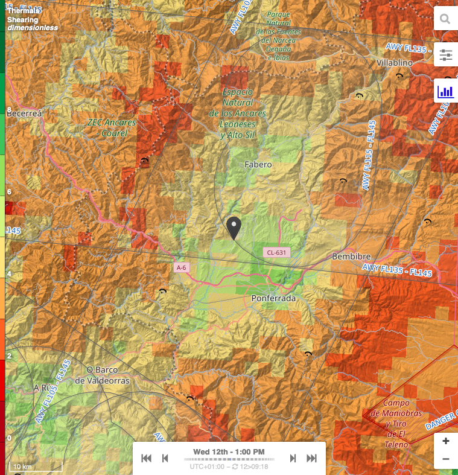
La carte de cisaillement des thermiques est sans dimension. Le cisaillement est un indicateur subjectif qui évalue le rapport entre la vitesse du thermique et la vitesse du vent. Il aide à estimer si la portance sera douce et agréable ou turbulente et cahoteuse.
Une couleur verte (valeur plus élevée) indique la présence de thermiques avec peu de vent, résultant en des conditions de portance plus stables et confortables.
Comprendre la carte de l'épaisseur de la couche limite
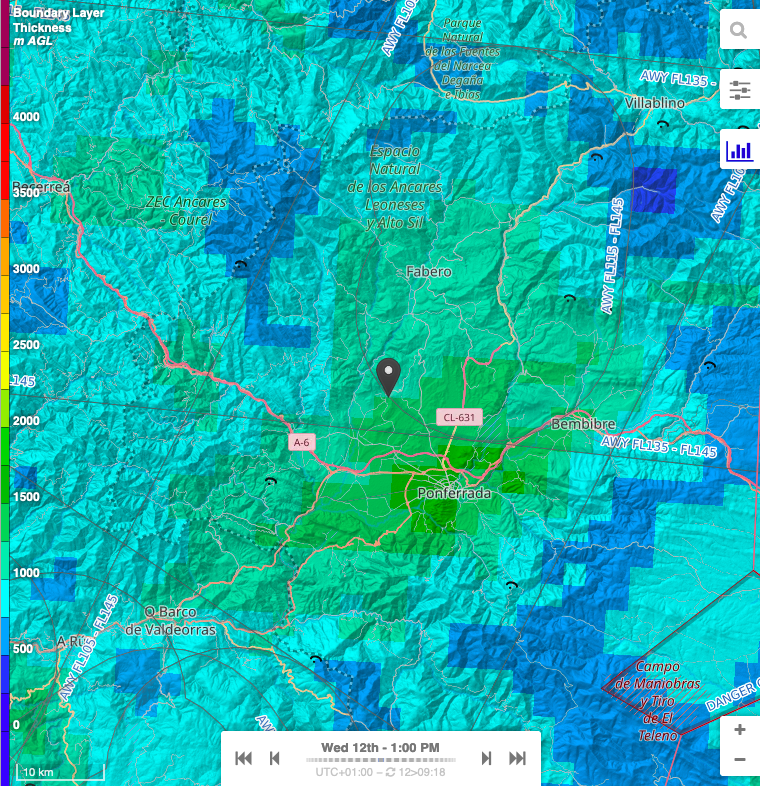
La carte de l'épaisseur de la couche limite représente la hauteur de la couche limite atmosphérique (en mètres au-dessus du niveau du sol), comme indiqué dans la légende à gauche.
La couche limite représente la partie de l'atmosphère influencée par les turbulences au sol. Ces turbulences sont créées par le vent ou l'activité thermique. Dans des conditions thermiques, on peut considérer que l'épaisseur de la couche limite est approximativement égale à la hauteur du plafond nuageux et de la base des nuages (par rapport à l'altitude du sol).
La carte du Plafond de la couche limite affiche l'altitude absolue du sommet de la couche limite (altitude du sol + épaisseur).
- Nuances de vert et bleu clair indiquent une couche limite basse (~500 à 2000 m AGL), où l'activité thermique est plus limitée.
- Nuances de jaune à rouge représentent une couche limite plus haute (~2000 à 4000 m AGL), permettant des thermiques plus forts et plus soutenus.
Le curseur temporel en bas permet de suivre l'évolution de la couche limite au cours de la journée.
Comprendre les cartes d'humidité
Les cartes d'humidité offrent un aperçu des couvertures nuageuses et des précipitations attendues.
Pour basculer entre différentes cartes d'humidité, cliquez sur le bouton Menu en haut à droite de l'écran, puis choisissez la représentation appropriée dans la liste déroulante Humidité.
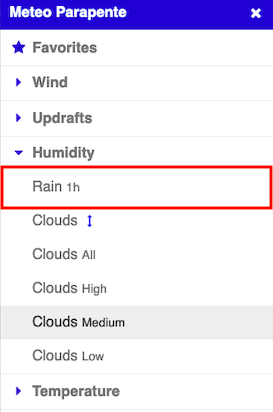
Comprendre la carte des précipitations
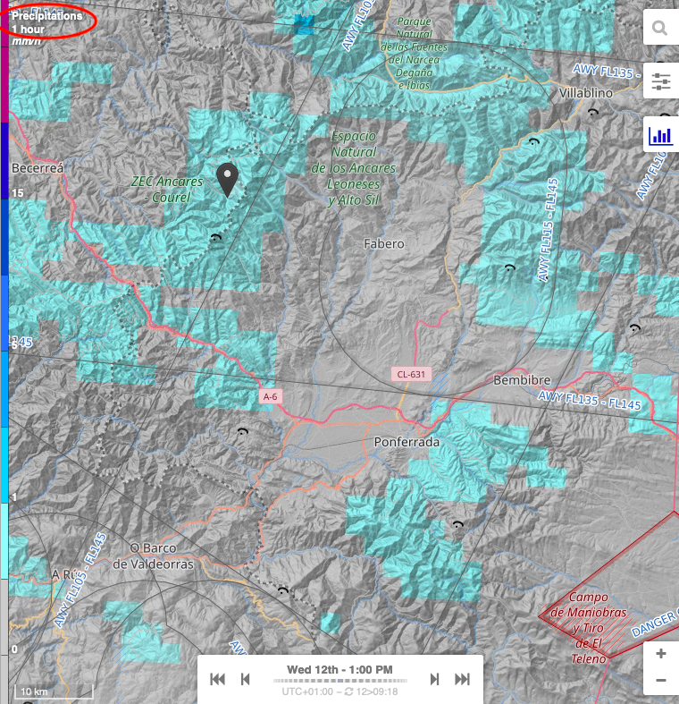
Cette carte affiche les précipitations horaires (mm/h), indiquant les zones où des pluies sont attendues.
Il est important de comprendre que prédire précisément les précipitations est très difficile, et TOUS les modèles, y compris Meteo-Parapente, ICON, AROME, ECMWF et GFS, peinent sur cet aspect. Il convient plutôt de le considérer comme un indicateur du risque de pluie que comme une valeur absolue.
Elle aide les pilotes à éviter les zones de pluie qui pourraient affecter la sécurité du vol. Elle identifie également les zones humides où la formation de nuages peut impacter l'activité thermique et limiter les possibilités de décollage ou d'atterrissage.
- Teintes bleu clair → Indiquent des précipitations légères (~0 à 5 mm/h).
- Teintes bleu foncé à violet → Représentent des précipitations modérées à fortes (>5 mm/h).
Le curseur temporel permet de suivre l'évolution des précipitations au cours de la journée.
Les précipitations apparaissent également en bas du Windgram :
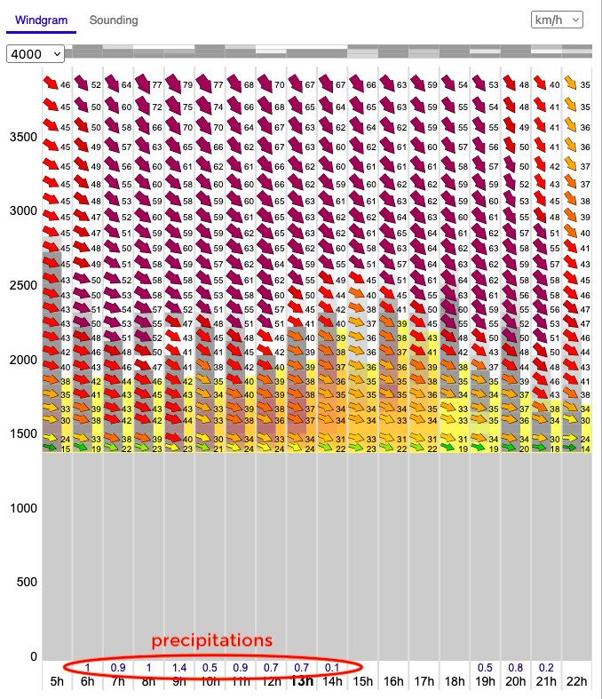
Comprendre la carte des nuages
Toutes les cartes de Nuages sont similaires, mais la carte des Nuages à différentes altitudes permet de naviguer entre différents niveaux d'altitude, tandis que les autres cartes se concentrent sur des zones d'altitude spécifiques. Nous ne discuterons donc que d'une de ces cartes.
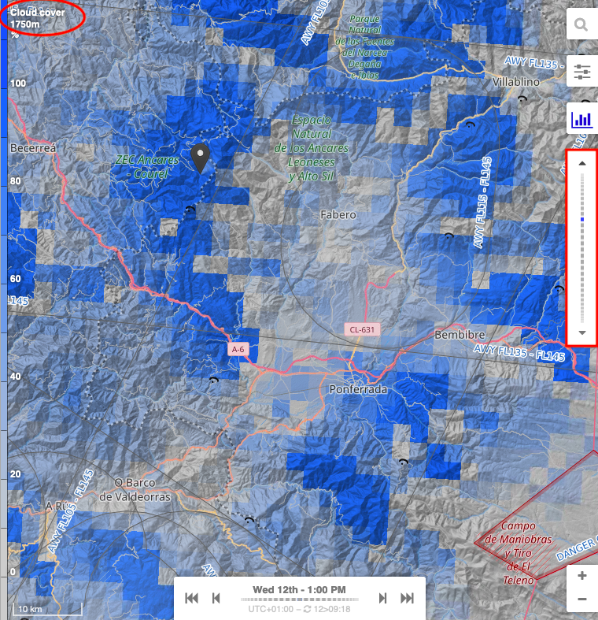
Cette carte affiche le pourcentage de couverture nuageuse à différentes altitudes. Elle identifie les couches de nuages potentielles ☁️ qui pourraient affecter la visibilité et aide à localiser les zones dégagées avec un meilleur développement thermique.
Pour naviguer entre les altitudes, utilisez le défilement vertical sur la droite, qui permet de passer par incréments de 250 m.
L'altitude actuelle est affichée dans le coin supérieur gauche de la page (ici, 1750 m).
La légende des couleurs est la suivante :
- Gris clair → Ciel dégagé ou très faible couverture nuageuse (~0-20%).
- Bleu clair à bleu foncé → Couverture nuageuse croissante (~20-80%).
- Teintes de bleu plus foncées → Indiquent une couverture nuageuse dense (~80-100%).
Comme d'habitude, le curseur temporel aide à suivre l'évolution des nuages au cours de la journée.
Comprendre les cartes de température
Comme pour les cartes de vent, il existe deux cartes de température, une à différentes altitudes et une autre au niveau du sol.
Comme d'habitude, pour passer de l'une à l'autre, cliquez sur le bouton Menu en haut à droite de l'écran, puis choisissez la bonne visualisation dans la liste déroulante Température.
Comprendre la carte de température au niveau du sol
Cette carte montre la température de l'air à 2 mètres au-dessus du niveau du sol (AGL), cruciale pour comprendre le réchauffement de surface et l'activité thermique.
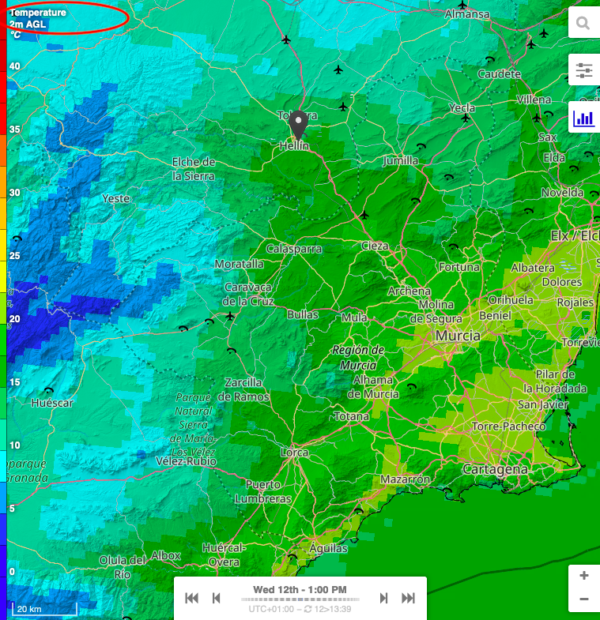
La légende est la suivante :
- Bleu foncé à cyan → Températures froides (~0-10°C).
- Vert à jaune → Températures douces à chaudes (~10-25°C).
- Orange à rouge → Températures chaudes (30°C et plus).
Au fur et à mesure que l'utilisateur fait défiler l'échelle de temps en bas de la carte, les données de température se mettent à jour dynamiquement, montrant l'évolution au cours de la journée.
Comprendre la carte de température à différentes altitudes
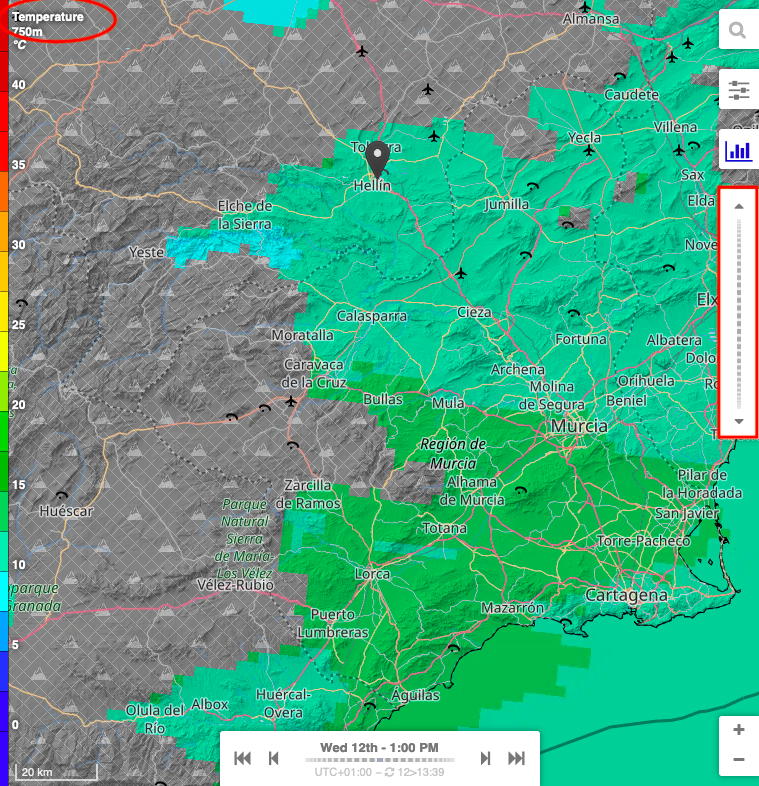
La carte de température à différentes altitudes est très similaire à la carte de vent au niveau du sol.
Voici les principales différences :
-
Pour naviguer entre les altitudes, utilisez le défilement vertical sur la droite, qui permet de passer par incréments de 250 m.
-
L'altitude actuelle est affichée dans le coin supérieur gauche de la page (ici, 750 m).
-
Une zone grisée représente le terrain montagneux tel que vu par le modèle, indiquant les régions où aucune donnée de température n'est disponible.
-
Naturellement, à mesure que l'altitude augmente, l'empreinte de la montagne diminue, révélant plus de données aux niveaux supérieurs.